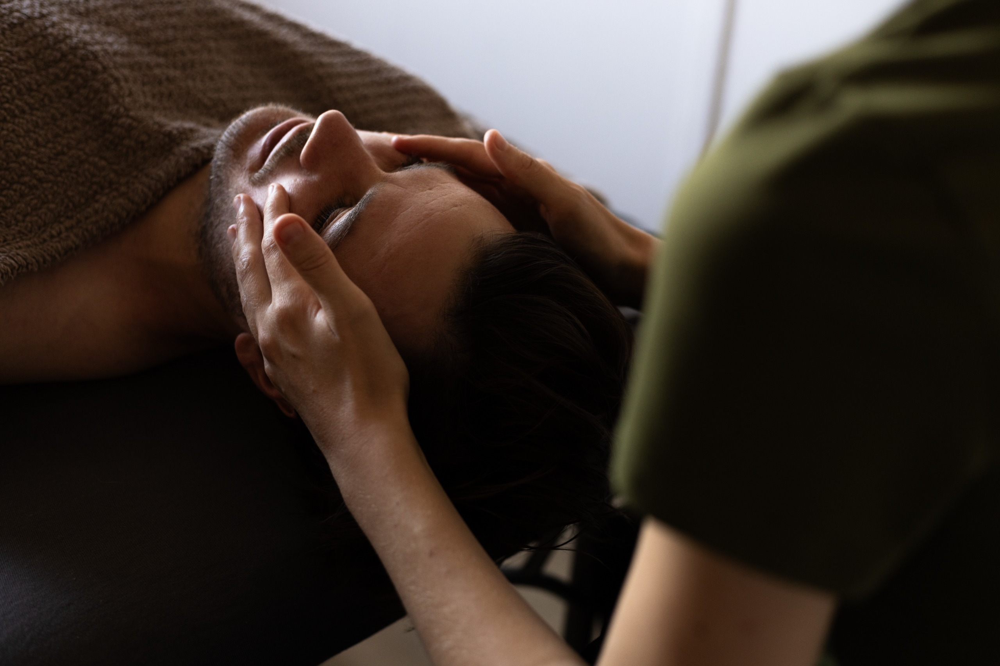

Massage Japonais du Visage
Massage traditionnel japonais du visage réalisé avec de l’huile.
Il a un effet liftant, grâce à des gestes précis. Il aide à stimuler la tonicité de la peau et à améliorer la circulation sanguine, tout en favorisant la relaxation.
Ce massage facial doux travaille également sur les méridiens qui vont favoriser l’équilibre et l’harmonie du corps.
Durée : 1 heure — 65 €
Je vous accueille les lundi, mardi, jeudi et vendredi entre 14h30 et 19h30. Le mercredi entre 9h et 19h30. Le samedi entre 9h et 12h.
Salon situé au 5, place de l'église - 57050 Longeville-les-Metz
Pour prendre rendez-vous, appelez moi au 06-87-60-53-46.